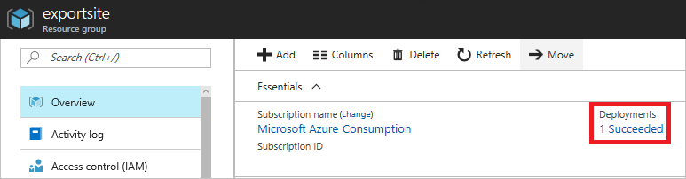
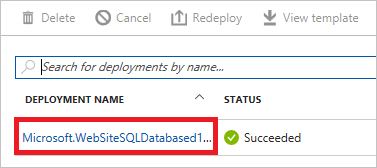
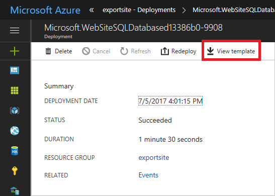

Correct Answer:
B
View template from deployment history
1. Go to the resource group for your new resource group. Notice that the portal shows the result of the last deployment. Select this link.

2. You see a history of deployments for the group. In your case, the portal probably lists only one deployment. Select this deployment.

3. The portal displays a summary of the deployment. The summary includes the status of the deployment and its operations and the values that you provided for parameters. To see the template that you used for the deployment, select View template.

References:
https://docs.microsoft.com/en-us/azure/azure-resource-manager/resource-manager-export-template